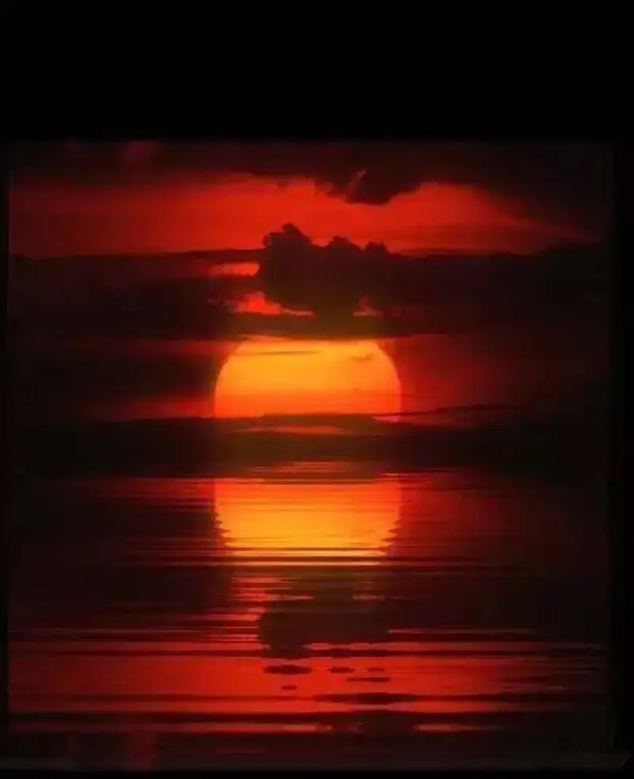
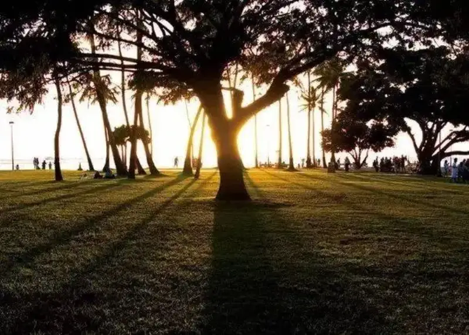
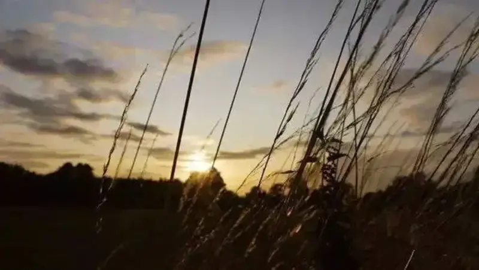

Photography always comes back to the sun. Where there is sun, you can shoot a good scene. Of the whole day, the clear yellow tones of sunset are the most fascinating.
To shoot a good sunset, first meter an accurate exposure, so the bright parts do not blow out and the dark parts do not vanish. Good composition and a good angle are also needed. Below are the composition tricks for shooting sunsets well.

Sunset composition
When shooting sunrise or sunset, center the sun and the sky around it. The most effective method is to use other supporting elements to set off the sun. In sunset photography, you can also use the reflection in water to give the setting sun a symmetric effect.
Aperture F4, shutter 1/50 s, ISO 800, focal length 35 mm. If you shoot by the sea at sunset, you can use the reflection on the water to spread the sun's glow.
Low-angle sunset composition
Split the frame horizontally with the rule of thirds, place the sun in the upper left, and build the frame around the surging waves. This shows strong motion. Shooting the sunset from a low angle shows the sunlit waves and spray more clearly.
Aperture F11, shutter 1/20 s, ISO 400, focal length 35 mm. The waves, set off by the setting sun, are rich and varied in detail.
When shooting in the evening, set the overall tone by the theme you want to show. Use the sun's own warm color to support the theme, and do not force the colors back to normal.
Side sunset composition
Placing the sun in the center with a horizontal composition is best avoided unless it is a close-up of the sun. Such sun-centered shots show no character. When you shoot a centered sunset, arrange the supporting elements and the subject well, and set off the sun from the side.
Aperture F5.6, shutter 1/1000 s, ISO 200, focal length 50 mm. When shooting the sunset, use the evening glow formed by clouds covering the sun and the surrounding natural scene.
Use shadows to set off the sunset glow
Using the shadow of an element to highlight the setting sun produces work that differs from most sunset shots. Most shots take the sun hanging between mountains or buildings as the theme. The image at right is an exception: the photographer chose the shadow of a person and a tree to highlight the theme.
Though the sun sits in the center, a large tree partly hides it, which strengthens the contrast of light and dark and of color. It is a shot with a unique angle. In the evening, meter toward the sky to lower the exposure and get a special silhouette.

Aperture F11, shutter 1/2000 s, ISO 100, focal length 24 mm. Though the tree hides the sun, the viewer feels the striking sunset glow from the strong shadow.
Aperture F8, shutter 1/1000 s, focal length 88 mm, ISO 400. A sunset over the sea: the evening glow reddens the whole sea, and the silhouetted person on the shore enriches the frame.
Combine motion and stillness
You can also split the frame evenly top and bottom, place the sunrise or sunset in the upper part to stress the light through the clouds, and highlight another element below. The image at right is a fine example. Look from the center: the top shows the still clouds, while the bottom shows the moving grass. Splitting the frame in equal parts creates unique work.

Aperture F3.5, shutter 1/400 s, ISO 400, focal length 24 mm.
The lower part takes little space, while the upper part shows the cloud-covered sun and its radiating light. This kind of framing that stresses light waves also produces good sunset work.
Pick the right time and place
Sunset is brief, so prepare well ahead: decide the subject and choose the spot in advance. For sky-dominant shots, add a visual element near the center of the frame to enrich the layers and add interest. A bird passing by is the best choice. It adds motion and a new point of interest. The scene of a lone bird flying with the evening glow needs patience, and such moments are rare.
Aperture F9, shutter 1/320 s, focal length 300 mm, ISO 100. Shot against the light, the small bird naturally forms a silhouette.
For sunsets, timing is key. The evening glow changes by the second, and a beautiful glow lasts only ten or twenty minutes, so you must shoot fast. Control the exposure: meter between the sun and the edge of the frame, and use that value. A slight underexposure strengthens the evening glow, while overexposure distorts the color and weakens the impact.
Aperture F11, shutter 1/500 s, focal length 600 mm, ISO 100. A bird chanced to cross the sun, and the bird and sun overlapped into a lively silhouette.